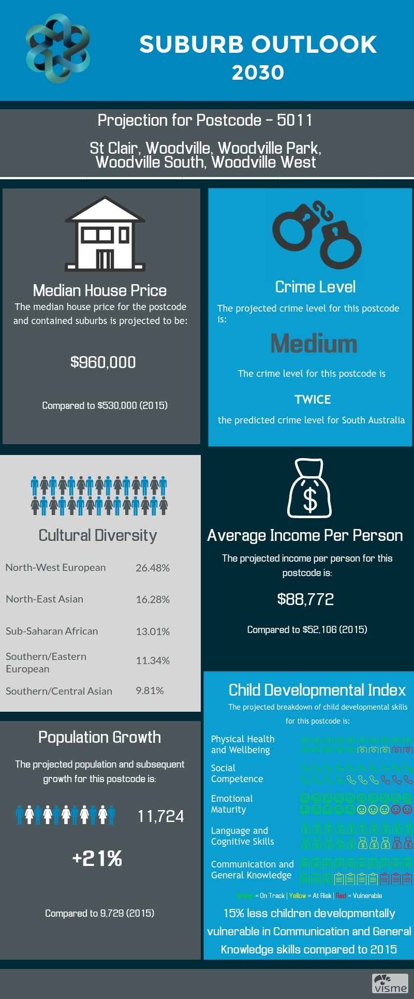

Suburb Outlook
Suburb Outlook is a forecasting tool designed to assist government authorities with making forward-thinking and informed decisions about the future development of a given suburb.
Below, we've included screens from our Proof of Concept, which demonstrate examples of three very different, diverse areas in South Australia that are currently at different stages of their overall development.
Projection for year 2030, for the Postcode of 5011 (Emerging Area)
Projection for the year 2030, for the Postcode of 5112 (Underdeveloped Area)
Projection for 2030, for Postcode of 5081 (Well Developed Area)
suburboutlook.tech, 2017.